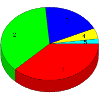

Week of 7/19/2009 to 7/25/2009: Top
5 of
5 File Types (Extensions)
Sorted by Access Count
Individual file types as determined by file extensions. All URLs that
do not contain an extension are counted as directories.

| Rank |
Type |
Accesses |
% |
Bytes |
% |
| 1 |
jpg
|
56 |
37.58 |
1,830,578 |
82.01 |
| 2 |
htm
|
54 |
36.24 |
218,989 |
9.81 |
| 3 |
Directory (folder)
|
29 |
19.46 |
70,875 |
3.18 |
| 4 |
gif
|
7 |
4.70 |
110,936 |
4.97 |
| 5 |
css
|
3 |
2.01 |
780 |
0.03 |